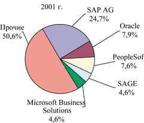
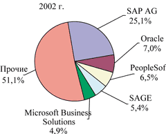

Александр Глинских,
к.т.н.,
a_glinskih@mail.ru
Все течет, все изменяется… Это популярное высказывание как нельзя лучше характеризует современное состояние ERP-рынка, как мирового, так и российского. В данной статье мы хотим представить ретроспективу рынка ERP-систем, которые за последние несколько десятков лет получили широкое распространение в мире.
Проблемы экономики и проблемы ERP
Одним из последствий бума информатизации, начавшегося несколько десятилетий назад, стало множество программных систем, которые по совокупности их характеристик можно классифицировать как ERP. Как считают отраслевые аналитики, в настоящее время на мировом рынке присутствует несколько сотен таких систем. В пятерку лидеров мирового ERP-рынка по итогам 2002 г. входят компании SAP AG (http://www.sap.com), Oracle (http://www.oracle.com), PeopleSoft (http://www.peoplesoft.com), SAGE (http://www.sage.com) и Microsoft Business Solutions (http://www.microsoft.com), совокупные доходы которых составляют почти 50% от общего объема ERP-рынка (см. рисунок), что свидетельствует об его высокой степени концентрации.
|  |  |
| Структура мирового рынка ERP в 2001 (слева) и в 2002 гг. (доля в объеме доходов от продажи новых лицензий). Источник: Gartner Dataquest (июнь 2003 г.).
|
|
Общее непростое положение мировой экономики привело к серьезным проблемам и на мировом ИТ-рынке, часть которого составляет ERP-рынок. По оценкам аналитиков, совокупный объем мирового рынка ERP снизился с 15 млрд долл. в 2000 г. до 9 млрд долл. в 2001 г. А в 2002 г. сужение всех сегментов рынка ERP продолжилось: сегмент ПО для управления финансами сократился по меньшей мере на 8%, сегменты ПО управления производством и персоналом - на 12% и 10% соответственно.
Аналитики осторожно предсказывают, что к 2006 г. объем ERP-рынка достигнет примерно 9,5 млрд долл. (здесь уместно вспомнить прогноз известной аналитической компании AMR Research, в 1998 г. утверждавшей, что в 2002 г. объем рынка ERP достигнет 52 млрд долл.). Хотя существует и более оптимистичный прогноз ARC Advisory Group, аналитики которой оценивают объем ERP-рынка в 2007 г. в 11,9 млрд долл.
Аналитики склонны принимать во внимание и другие причины сужения рынка. Так, ARC Advisory Group считает, что к 2001 г. произошло определенное перенасыщение рынка ERP, в первую очередь среди крупных компаний с годовыми доходами более 1 млрд долл. Крупные предприятия в течение ближайших нескольких лет не планируют внедрения сложных и дорогостоящих ERP-систем. Одним из следствий этого стало определенное изменение структуры доходов поставщиков ПО данного класса. Значительно снизились доходы от поставки лицензий, и в итоге в 2001 г. до 65% доходов поставщикам ERP-систем принесли различные услуги (консалтинговые, сопровождение установленных систем, интеграция с другими системами и т. п.). По данным Gartner Group, в 2002 г. доходы от продажи новых программных лицензий ERP-систем снизились на 9% - до 5 млрд долл. по сравнению с 5,5 млрд долл. в 2001 г. В некоторых сегментах рынка объем проданных лицензий на ERP-системы упал почти на 70%.
После нескольких лет интенсивного развития почти все крупные ERP-производители столкнулись с серьезными трудностями. Убытки понесли и такие известные компании, как J. D. Edwards и PeopleSoft, а Baan была поглощена корпорацией Invensys. Сложными были эти годы и для компании SAP, которая в I квартале 2003 г. зафиксировала 12%-ное снижение продаж своего ПО. Частично трудности были связаны со смещением спроса потребителей в сторону CRM и SCM-приложений. Кроме того, клиенты стали предпочитать небольшие и недорогие приложения, соответствующие конкретному типу бизнеса (а в предшествующие годы некоторые крупные предприятия приобрели даже больше лицензий ERP-систем, чем им реально требуется сегодня).
Свою лепту в разочарование потребителей и сокращение рынка внес и ряд проблем, выявленных в ходе внедрения и использования ERP-систем. Главная проблема - это, конечно, неэффективность внедрения, лишний раз свидетельствующая о том, что любая наисовременная технология будет полезна лишь при условии ее грамотного внедрения и применения. По данным Pricewaterhouse Coopers, в 2001 г. было зафиксировано до 28% неудач при внедрении ERP-систем. Существуют и более пессимистичные оценки зарубежных аналитиков, согласно которым до 70% проектов внедрения ERP-систем могут закончиться неуспехом (что, естественно, приводит к большим финансовым потерям для любого предприятия, а в случае ответных исков - к потерям и для внедренцев системы). По данным BCG, только треть предприятий удовлетворены результатами внедрения ERP-системы при оценке по критериям ценообразования, соотношения цены и эффективности, реального финансового эффекта и достижения поставленных целей. В связи с этим поставщики ERP-систем предпочитают сегодня говорить о своем опыте "продуктивных", а не "успешных" внедрений.
Немалые сложности вызывают и проблемы интеграции ERP-систем с различными корпоративными приложениями. Еще одна острая проблема - ограниченность аналитических возможностей ERP-систем и недостаточная поддержка процессов принятия решений. Нельзя не сказать и о такой проблеме, как слабые возможности создания сложных отчетов, что приводит к необходимости интегрировать с ERP-системами дополнительные генераторы отчетов от третьих фирм, работающие напрямую с базами данных ERP-систем.
Тем не менее, несмотря на все трудности, предприятиям нужно жить и развиваться. А одним из средств обеспечения рентабельности в современной слабопредсказуемой экономической и геополитической ситуации как раз и служит разумное использование ERP-систем. Именно это обстоятельство создает основу для дальнейшего развития мирового рынка ERP-систем, основные тенденции которого мы рассмотрим ниже.
Тенденции мирового рынка ERP
Консолидация и укрупнение бизнеса производителей
Аналитики IDC считают, что вплоть до 2005 г. консолидация будет преобладающей тенденцией на ERP-рынке. Столкнувшись с заметным сужением рынка, ERP-производители просто вынуждены идти по пути консолидации - только эта стратегия позволит им расширить клиентскую базу и сохранить свое место на рынке (такого мнения придерживаются и аналитические компании Aberdeen Group и AMR Research). Причем консолидация рассматривается как панацея (в определенном смысле) не только участниками ERP-рынка нижнего и среднего эшелонов, но и его лидерами.
Вспомним недавнюю будоражившую весь рынок в течение двух месяцев историю с поглощением J. D. Edwards компанией PeopleSoft. Естественно, что эта сделка вызвала активное противодействие корпорации Oracle, обоснованно усмотревшей в ней угрозу своим жизненно важным интересам (и не только в сфере ERP, но и в области баз данных, так как в результате слияния J. D. Edwards и PeopleSoft более активную роль на мировом ИТ-рынке начинает играть и их партнер - компания IBM со своей СУБД DB2). Цена вопроса была очень велика, и не случайно Oracle пустила в ход все свои финансовые возможности, стараясь помешать этой сделке (здесь даже сумма в 6,3 млрд долл. не кажется чрезмерной, так как Oracle грозит нечто большее - вытеснение со второго места на ERP-рынке с соответствующей потерей доходов, а в перспективе - ухудшение ее позиций и на рынке СУБД). Тем не менее слияние J. D. Edwards и PeopleSoft (с общей суммой сделки в 1,8 млрд долл.) состоялось, завершившись в июле этого года. Теперь PeopleSoft переместилась на второе место на мировом рынке ERP-систем (с предполагаемым годовым доходом в 2,8 млрд долл.) и получила выход на рынки Европы и Азии через каналы продаж J. D. Edwards.
Еще раньше, в конце 2000 г., произошло слияние известных европейских ERP-разработчиков - компаний Navision и Damgaard, а в 2002 году объединенная компания была приобретена (с суммой сделки 1,3 млрд долл.) корпорацией Microsoft, увидевшей свои стратегические интересы на рынке ERP.
Несколько слов следует сказать и о судьбе компании Baan, пример которой лишний раз демонстрирует, насколько непросто в современных условиях выжить и сохранить свою самостоятельность компании, даже обладающей хорошим коллективом разработчиков, высокотехнологичными решениями и обширной клиентской базой. После ряда финансовых неудач Baan и ее приобретения в 2000 г. корпорацией Invensys (за 714,7 млн долл.) в июне 2003 г. было официально объявлено о продаже Baan за 135 млн долл. венчурной группе General Atlantic Partners (GAP). Invensys решила сосредоточиться на более прибыльном бизнесе, чем разработка и внедрение ERP-систем. А Baan группа GAP собирается объединить (сохранив за Baan статус дочерней компании) с компанией SSA Global Technologies (SSA GT), в которую она уже вложила 75 млн долл. инвестиций. GAP рассчитывает, что ежегодные доходы объединенных компаний составят почти 600 млн долл., что выведет SSA GT (уже имеющую в своем арсенале такие ERP-продукты, как BPCS, PRMS, CAS, MANMAN, MK, Masterpiece, MAXCIM, KBM и т. д.) на четвертое место на рынке ERP.
Еще один характерный пример консолидации - поглощение компанией MAPICS (http://www.mapics.com) фирмы Frontstep (сумма сделки составила 51,5 млн долл.). MAPICS рассчитывает выйти на уровень ежегодных доходов не менее 200 млн долл. И, судя по всему, в ближайшее время нам предстоит увидеть новые слияния и поглощения среди ERP-производителей…
Переориентация на новые рынки
Еще одним следствием сужения ERP-рынка стало стремление ERP-поставщиков выйти на новые для них рынки, в том числе за счет приобретения компаний, уже обладающих необходимыми технологиями, или самих технологий. При этом крупные ERP-разработчики, ранее ориентировавшиеся преимущественно на предприятия с годовым оборотом не менее 1 млрд долл., стараются теперь захватить определенные позиции и в секторе малых и средних предприятий, а также на рынках развивающихся стран. Характерный пример такой стратегии дают действия SAP AG и Microsoft Business Solutions.
Лидер ERP-рынка, компания SAP, взяла курс на всемерное упрощение своих программных продуктов до такой степени, чтобы они стали доступными по цене для малых и средних предприятий и требовали меньшей настройки. SAP предлагает сегодня два новых программных продукта - SAP Business One и SAP All-in-One. SAP Business One - это ПО израильской фирмы TopManage Financial Solutions (поглощенной ранее SAP), имеющее общие интерфейсы с mySAP.com. Система предназначена для предприятий и организаций (преимущественно торговых) с числом пользователей не более 100 и не имеет производственного модуля (реализованы возможности бухгалтерского учета, генерации отчетов, логистики и автоматизации продаж). В свою очередь, SAP All-in-One предназначена для средних предприятий и создана на основе стандартной системы SAP R/3, что позволяет расширять ее до масштабов mySAP.com. Кроме того, SAP AG предлагает свое ПО в аренду через Интернет (по модели ASP), считая, что это повысит его привлекательность (аналогичным образом пытались продвигать свои системы и другие ERP-разработчики, например, компании Ross Systems и J. D. Edwards). Больше внимания SAP стала уделять и повышению доли услуг в формировании своих доходов, создав специальную сервисную организацию SAP по развитию решений пользователей.
Microsoft Business Solutions - подразделение корпорации Microsoft, хорошо осознающей стратегическую важность рынка малых и средних предприятий для своего бизнеса. Для реализации своих интересов в этом сегменте Microsoft и приобрела сначала известную софтверную фирму Great Plains (c бухгалтерским ПО E-Enterprise, предназначенным для фирм с годовыми доходами от 100 млн до 500 млн долл. и достаточно широко распространенным в США), а затем - не менее известную (но уже в Европе) компанию Navision с ее популярными программными продуктами Axapta и Attain, предназначенными соответственно для средних и малых предприятий. Учитывая, что создание собственной ERP-системы, каналов ее продаж - это очень дорогостоящее занятие, требующее немалых затрат времени, приобретения Microsoft совершенно оправданны.
В свою очередь, производители ERP-систем для малых и средних предприятий "утяжеляют" свои программные продукты, также стараясь выйти на новые для себя рынки.
Интеграция
Многообразие предлагаемых на рынке корпоративных программных продуктов и дальнейшее усложнение ИТ-среды предприятий и организаций неизбежно приводят к необходимости интеграции программных приложений между собой. По мнению аналитиков AMR Research, ERP-системы, у которых нет встроенных средств интеграции с другими корпоративными приложениями, не имеют перспектив на рынке.
ERP-разработчики понимают, что для сохранения конкурентоспособности необходимо сотрудничество даже с конкурентами (в плане интеграции программных продуктов). Ведь часто встречаются предприятия, где одновременно используется сразу несколько ERP-систем, выполняющих свои задачи на разных уровнях. Для интеграции ERP-систем используется специальное промежуточное (middleware) ПО (например, Microsoft BizTalk Server) и программные адаптеры. Используются и специализированные инструментальные средства (скажем, Baan предлагает для интеграции своей ERP-системы с унаследованными программными системами и корпоративными приложениями третьих фирм XML-ориентированный инструментарий iBaan OpenWorld). Перспективным направлением считается использование стандартов XML, на базе которых создаются новые стандарты для интеграции ERP-систем (эти работы финансируются ведущими ERP-производителями).
Одним из возможных путей развития рынка аналитики считают поставку полностью интегрированных наборов корпоративных приложений, неотъемлемой составной частью которых являются ERP-системы.
Развитие дополнительной функциональности
Помимо функциональности CRM и SCM, в последние полтора-два года ведущие ERP-разработчики обратили внимание и на функциональность PLM (Product Lifecycle Management - управление жизненным циклом продукта). Применение систем PLM позволяет оптимизировать информационное сопровождение процессов проектирования, планирования изготовления, изготовления и сопровождения сложных изделий во множестве отраслей (в машиностроении, судостроении, космическое и авиастроение и т. д.), а следовательно, ускорить эти процессы и оптимизировать издержки, связанные с выпуском новых изделий. О реализации PLM-функциональности в своих ERP-системах уже заявили компании SAP AG, Baan, Oracle и другие.
Кроме того, весьма востребованной остается и Интернет-функциональность (предоставление доступа к ERP-системе как через интрасеть, так и через Интернет). Функциональные возможности ERP-систем реализуются в виде сервисов, доступных любому пользователю через Web-браузер. Интернет-функциональность есть, например, в ERP-системах SAP R/3 (через инфраструктуру MySAP.com), Oracle Applications и MBS-Axapta.
Глобализация и диверсификация ERP-бизнеса
Эта тенденция проявляется через образование всевозможных партнерских союзов и альянсов, а также через разделение (часто международное) труда по разработке, внедрению и продвижению ERP-систем. Это означает, что какие-то компании занимаются разработкой отдельных модулей ERP-систем (для экономии средств нередко прибегая к оффшорному программированию), другие - их сборкой в единую систему, третьи отвечают за поставку и внедрение ERP-систем, четвертые оказывают различные услуги, связанные с данной ERP-системой и т. д. Конечно, ряд ERP-разработчиков предпочитает сохранить в своих руках большинство из этих источников получения доходов, однако диверсификация ERP-бизнеса становится все более популярной в мире.
Особенности российского рынка
В течение последних нескольких лет российский ИТ-рынок показывает высокие темпы роста. По оптимистичным оценкам, к 2005 г. его объем удвоится по сравнению с 2002 г. и достигнет 12 млрд долл. (недавно появился прогноз Министерства по связи и информатизации РФ, согласно которому к 2005 г. эта цифра составит 20 млрд долл.). А к 2010 г. прогнозируется увеличение отечественного ИТ-рынка еще более чем втрое - до 40 млрд долл.
Системы управления предприятием пока занимают на российском рынке очень небольшую долю: сегодня объем этого сегмента не достигает и 100 млн долл. (в 2001 г. он оценивался в 54,29 млн долл.). Однако IDC прогнозирует, что уже к 2005 г. будет достигнут уровень 136,4 млн долл. (имеется в виду стоимость поставленных лицензий, без учета стоимости услуг по консалтингу и внедрению), и насыщения рынка пока не видно (что тут говорить, когда сумма только одного предполагаемого контракта по установке ERP-системы Oracle E-Business Suite в холдинге "Связьинвест" составляет 153 млн долл. и превышает существующий объем всего российского ERP-рынка).
Факторов роста российского рынка систем управления достаточно много. Прежде всего это заметный подъем экономики в большинстве отраслей (наряду с политической стабильностью), что, в свою очередь, вызывает интерес как зарубежных, так и отечественных инвесторов к долгосрочным вложениям в производство. Далее, это достижение определенного уровня стабильности в отношениях собственности. Можно назвать и такие факторы, как снижение рентабельности операций и усиление конкуренции на внутреннем рынке, выход многих российских компаний на мировой рынок.
Доминирующее положение на российском рынке (по объему продаж) занимают поставщики западных ERP-систем (в первую очередь SAP AG), доля которых превышает 60% от общего объема рынка, и это одна из его главных особенностей. Правда, следует оценивать и количество пользователей ERP-систем. В этом случае общая картина несколько меняется, так как большинство российских продуктов значительно дешевле западных, поэтому число их пользователей в России больше. Второе место на рынке (также по объему продаж), по оценкам, занимает корпорация "Парус" (http://www.parus.ru), а третье - корпорация "Галактика" (http://www.galaktika.ru). Суммарная доля этой тройки составляет около двух третей всего российского рынка систем управления. Учитывая, что общее число компаний - основных участников этого рынка (зарубежных и отечественных) составляет несколько десятков, можно сделать вывод о высокой степени концентрации рынка.
Характерной особенностью российского рынка в последнее время становится жесткая конкуренция (в том числе и ценовая) между отечественными и зарубежными компаниями. Мало того, что все ведущие западные ERP-поставщики достаточно успешно локализовали свои продукты и уже быстрее, чем раньше, отрабатывают различные законодательные изменения (а ведь пресловутая российская специфика была из ключевых преимуществ российских систем), они претендуют теперь и на место российских продуктов на рынках малых и средних предприятий. Свою стратегию по выходу на рынки малых и средних предприятий компании SAP AG и Microsoft Business Solutions последовательно реализуют и в России (хотя доходы, получаемые ими сейчас на российском рынке, составляют считанные проценты от их общих доходов). Сейчас идет локализация систем SAP Business One и All-in-One и подготовка к развертыванию обширной дилерской сети для их распространения в России. Кроме того, SAP AG в течение ближайших пяти лет собирается увеличить численность местного персонала в России до 2000 человек. По планам SAP, через три года доходы ее российского представительства от продаж решений для малого и среднего бизнеса должны составить не менее 30% от его годового оборота.
В свою очередь, MBS сейчас активно наращивает число своих российских партнеров по продвижению систем MBS-Axapta и MBS-Navision (ранее известной как Attain). Кроме того, MBS собирается кредитовать предприятия среднего бизнеса (в том числе и в России), приобретающие ее ERP-продукты, выделив для этого сумму до 50 млрд долл. А стоимость решения "Малый Бизнес" для 10 пользователей, по утверждению MBS, не превысит 14 тыс. евро (здесь есть о чем задуматься отечественным поставщикам…). Вспомним еще решение российского правительства о том, что с января 2004 г. все предприятия с акционерной формой собственности должны предоставлять данные в налоговые органы по международным стандартам финансовой отчетности. Можно также добавить, что некоторые российские предприятия уже начали менять системы отечественной разработки на Axapta и Navision (но здесь еще рано говорить о тенденции).
В качестве основного достоинства зарубежных ERP-систем декларируется их более развитая, чем у российских систем, функциональность и универсальность (в первую очередь в области автоматизации процессов планирования и производства), на создание которой были потрачены огромные финансовые, людские и временные ресурсы. В то же время на российских предприятиях такая функциональность в подавляющем большинстве случаев просто не востребована (возможно, здесь кроется одна из причин относительно скромного числа продуктивных внедрений зарубежных ERP-систем). А так как за функциональность всегда надо платить (а денег на большинстве отечественных предприятий не хватает на самые необходимые расходы), то дорогостоящая функциональность зарубежных ERP-систем иногда препятствует их более широкому распространению. С другой стороны, за сумму от нескольких сотен тысяч долларов (стоимость большинства зарубежных ERP-систем) ряд российских разработчиков готов создать "под ключ" функционал, необходимый предприятию (естественно, на базе своих программных средств). Судя по всему, это альтернатива, имеющая право на существование…
Если же говорить о распространении зарубежных ERP-систем, то в настоящее время они широко внедрены в нефтегазовой и транспортной отраслях, в энергетическом комплексе, металлургии и т. д. Поставщики этих систем сейчас предпринимают всевозможные усилия для их проникновения (и распространения) в таких отраслях, как машиностроение, судостроение, космическое и авиастроение и т. д.
Примером может служить внедрение ERP-системы Baan IV на Балтийском заводе в Санкт-Петербурге. Внедрение ее началось еще в 2000 г. и, по наиболее реалистичным оценкам, завершится не раньше, чем через два года (т. е. полный цикл внедрения зарубежной ERP-системы займет не менее пяти лет). Частично это объясняется тем, что в процессе внедрения задействованы только сотрудники Балтийского завода (всего около 20). В целом современная практика внедрения зарубежных ERP-систем показывает, что привлечение внешних специалистов из внедренческих фирм очень часто неэффективно и ведет к значительным и порой бестолковым тратам как денег, так и времени (и это характерно не только для Балтийского завода). По данным ИТ-специалистов завода, в июне 2003 г. на предприятии функционировало 110 рабочих мест Baan IV (снабжение, склады, цехи, отдел технического контроля, входной контроль, бухгалтерия). Сейчас идет опытно-промышленная эксплуатация 34 бизнес-процессов производственной логистики. В настоящее время все первичные документы формируются из Baan IV. Реализованы настраиваемость системы при работе с заказными изделиями и учет партионных цен (для этого в Baan IV пришлось "дописывать" функциональность под специфику судостроения). Сейчас идут пилотные проекты по внедрению "грубого планирования" на трех строящихся проектах. До управления качеством и разработки корпоративного стандарта еще просто "не дошли руки". В качестве одной из особенностей внедрения Baan IV на Балтийском заводе можно отметить реализованную интеграцию с системой управления персоналом "БОСС-Кадровик" (пока только на простейшем уровне обмена текстовыми файлами, хотя рассматривается возможность перехода на следующий уровень интеграции - уровень API-интерфейсов).
В свою очередь, отечественные системы достаточно широко распространены в пищевой, химической промышленности, в госструктурах, есть примеры внедрения и в нефтегазовой отрасли. Что же касается успешности внедрения ERP-систем в России, то, по данным компании SAP AG, летом 2001 г. на отечественных предприятиях продуктивно работали лишь 110 ее систем (из 200 установленных). У компании Baan на тот же момент времени продуктивно функционировала 21 установленная система из 44. Ряд известных автору специалистов, работавших как с зарубежными, так и с отечественными ERP-системами, высказывают и такое мнение, что в России до сих пор нет ни одного эффективного внедрения этих систем - есть в лучшем случае так называемые продуктивные внедрения…
Еще одна особенность российского рынка - большое количество предприятий, использующих унаследованные системы (часто собственной разработки и предназначенные преимущественно для решения задач бухгалтерии и складского учета). Правда, сейчас это положение постепенно меняется, предприятия обращают все больше внимания на заказные и тиражируемые системы. При этом на большинстве российских предприятий, использующих системы управления, пока внедрены в основном финансовые и логистические модули. Модули управления производством внедрены на очень немногих российских предприятиях (хотя в последнее время интерес к ним резко растет). Некоторые отечественные предприятия интересуются возможностями CRM и SCM. Возможности электронной коммерции типа В2В тоже рассматриваются с интересом (но не более того)...
Что же касается российских предприятий, которые могут позволить себе внедрить систему управления, то их диапазон чрезвычайно широк. Если любое малое предприятие с годовым доходом от нескольких десятков тысяч долларов и несколькими сотрудниками может остановиться на ПО от "1C" или "Интеллект-Сервис" общей стоимостью не более нескольких сотен или тысяч долларов, то крупные предприятия и организации с десятками и сотнями тысяч работающих и многомиллиардными доходами (в основном это предприятия добывающих отраслей) могут позволить себе и многомиллионные вложения в информационные системы (в основном созданные на базе зарубежных ERP-систем). Между этими категориями потенциальных клиентов находятся средние по размеру и доходам предприятия и организации с численностью от нескольких сотен человек и с годовыми доходами в несколько миллионов долларов. Учитывая, что обычно предприятия могут позволить себе ежегодно тратить на ИТ 1-2% своих доходов, то для большинства российских средних предприятий вполне доступны системы с общей стоимостью поставки и внедрения от 100 до 300 тыс. долл. (автору известно по крайней мере несколько примеров проектов такой стоимости на российских предприятиях с годовыми доходами до 10 млн долл.).
Основные направления развития российского рынка
За последние несколько лет на российском рынке систем управления произошли определенные перемены, достаточно серьезно изменившие как его общее состояние, так и положение основных участников. ERP-бизнес - это весьма сложное и ресурсоемкое занятие. Разработка и поддержание необходимой функциональности в ERP-системах требует больших вложений в человеческие ресурсы (в первую очередь программистов). Многомиллионные и многомиллиардные доходы ERP-поставщиков часто ничего не говорят о том, какая обширная и разветвленная инфраструктура стоит за ними. Учитывая большие расходы ERP-поставщиков (привлекательная зарплата для программистов и внедренцев, всевозможные налоги, аренда офисов, затраты на оборудование и т. д.), вряд ли можно говорить о высокой рентабельности их бизнеса.
Не в последнюю очередь в связи с этим в последние два-три года мы наблюдаем уход с рынка (или определенную рыночную переориентацию) некоторых известных отечественных разработчиков. Кто бы мог предсказать еще пару лет назад, что известная российская компания "Никос-Софт" весной 2002 г. полностью уйдет с рынка, оставив фактически на произвол судьбы, своих клиентов (которым теперь неизбежно придется внедрять новую систему). Второй пример - осенью 2001 г. компания "АйТи" (http://www.it.ru), известная своим программным продуктом "БОСС-Корпорация", решила передать бизнес, связанный с этим ПО, своей дочерней компании "Аплана", оставив за собой оказание услуг по консалтингу и внедрению распространенных зарубежных ERP-систем. Да что говорить, если несколько месяцев назад известный отечественный поставщик ПО для малых и средних предприятий, компания "Интеллект-Сервис" (http://www.bestnet.ru), решил установить партнерские отношения с MBS по продвижению (в том числе среди своих клиентов) решений MBS-Axapta и MBS-Navision? А компания "1С", с другой стороны, нацеливается на новый для себя рынок более крупных предприятий с помощью программной платформы "1С: Предприятие" версии 8.0.
Что касается общих направлений развития рынка, можно выделить следующие:
- создание типовых и отраслевых решений, специализация поставщиков;
- развитие функциональности и кросс-платформенности отечественных систем;
- повышение интереса к интегрированным решениям.
Типовые и отраслевые решения
Отечественные предприятия готовы платить за отраслевые решения, в которых реализована специфика их бизнеса. Кроме того, растет интерес и к типовым решениям. Например, на базе платформы "1С: Предприятие" созданы уже сотни типовых и отраслевых решений, а число фирм, занимающихся их разработкой, исчисляется многими десятками. Рост интереса заказчиков к отраслевым решениям отмечают и другие отечественные разработчики систем управления. Кроме того, наряду с рыночной переориентацией и переходом на иные рынки, наблюдается и другая тенденция - стремление поставщики закрепиться в своей рыночной нише, удержав существующих клиентов за счет предложения им различных специализированных услуг.
Функциональность и кросс-платформенность
Отечественные поставщики ведут определенные работы по реализации в своих продуктах функциональности CRM и SCM (можно привести в пример компании "Парус", "Галактика" и "Компас"). Кроме того, в ряде отечественных систем ("Галактика", "Компас", "1C") реализована поддержка платформ Microsoft .NET и Linux.
Несколько слов следует сказать о развитии в отечественных продуктах функциональности MRP/MRP II/ERP. Ряд отечественных компаний (например, "Галактика" и "Парус") объявили о реализации в своих системах функциональности MRP II (и частично ERP). Есть также примеры приобретения прав на некоторые зарубежные системы класса MRP II, достаточно хорошо известные в Европе, их локализации, доработки кросс-платформенности и распространения под новой торговой маркой. Несомненно, что оба этих способа развития функциональности имеют право на существование (и за каждым из них концентрируются значительные финансовые и человеческие ресурсы). Вопрос заключается только в том, какой из них окажется жизнеспособнее.
Интерес к интегрированным решениям
Часто российскому предприятию требуется не просто информационная система, решающая задачи управления его финансово-хозяйственной и производственной деятельностью, а интегрированное решение, способное обеспечить информационное сопровождение выпускаемой продукции на основных стадиях ее жизненного цикла. В связи с этим за последний год на российском рынке систем управления стало отчетливо просматриваться стремление поставщиков интегрировать свои программные продукты с распространенными CAD/CAM/PDM-системами. В качестве примеров можно назвать, в частности, интеграцию зарубежной CAD/CAM-системы SolidWorks и ERP-системы MFG/PRO от компании QAD (выполнена с участием российских компаний), интеграцию отечественной CAD/CAM-системы "Компас 3D" (компании "Аскон") с решением для управления предприятием "ИТРП: Производственное предприятие" (на платформе "1С"), интеграцию той же "Компас 3D" с ERP-системой SyteLine и т. д. Судя по всему, в перспективе интерес к таким интегрированным решениям будет только расти.